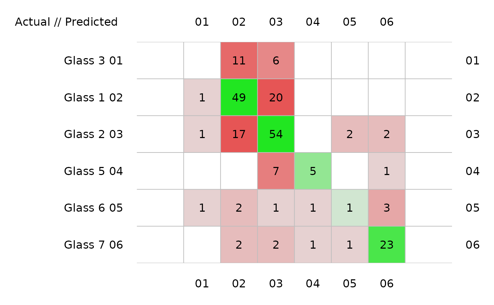
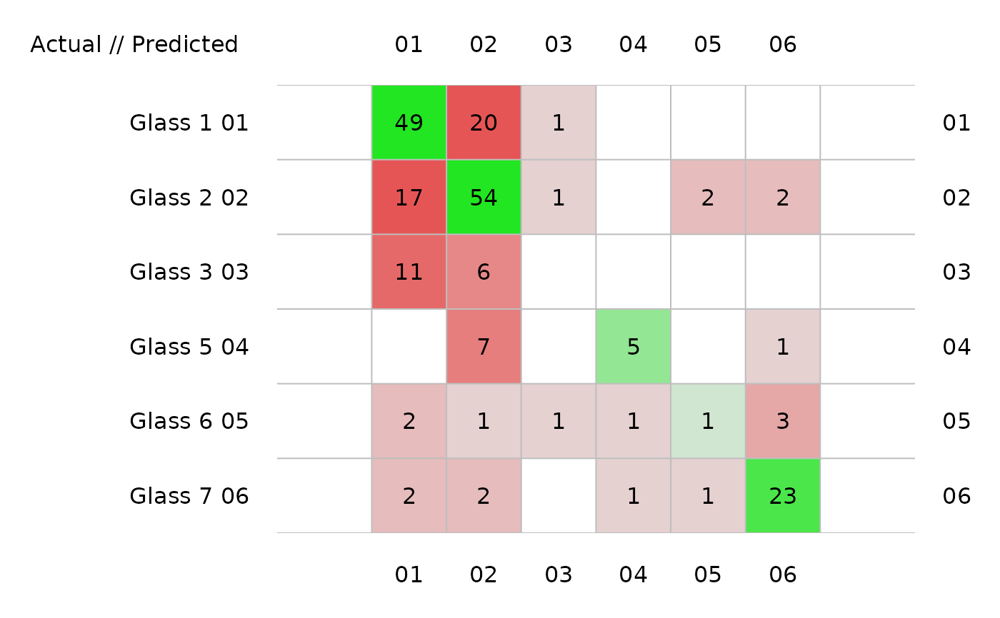
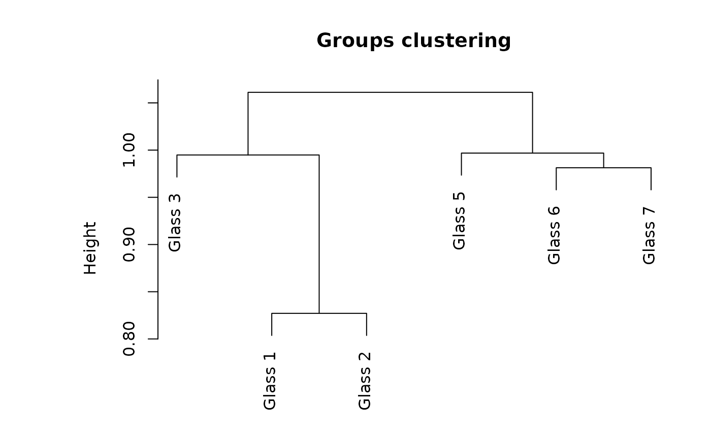
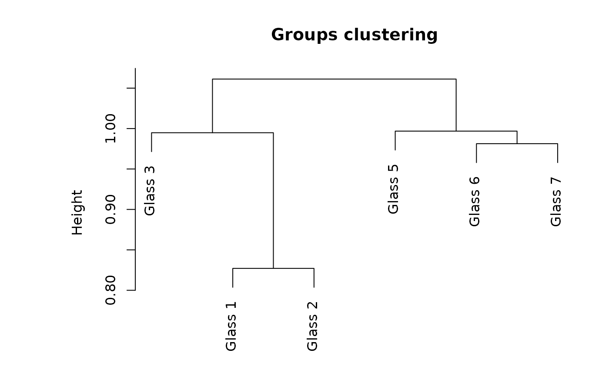

Several graphical representations of confusion objects are possible: an image of the matrix with colored squares, a barplot comparing recall and precision, a stars plot also comparing two metrics, possibly also comparing two different classifiers of the same dataset, or a dendrogram grouping the classes relative to the errors observed in the confusion matrix (classes with more errors are pooled together more rapidly).
# S3 method for class 'confusion'
plot(
x,
y = NULL,
type = c("image", "barplot", "stars", "dendrogram"),
stat1 = "Recall",
stat2 = "Precision",
names,
...
)
confusion_image(
x,
y = NULL,
labels = names(dimnames(x)),
sort = "ward.D2",
numbers = TRUE,
digits = 0,
mar = c(3.1, 10.1, 3.1, 3.1),
cex = 1,
asp = 1,
colfun,
ncols = 41,
col0 = FALSE,
grid.col = "gray",
...
)
confusionImage(
x,
y = NULL,
labels = names(dimnames(x)),
sort = "ward.D2",
numbers = TRUE,
digits = 0,
mar = c(3.1, 10.1, 3.1, 3.1),
cex = 1,
asp = 1,
colfun,
ncols = 41,
col0 = FALSE,
grid.col = "gray",
...
)
confusion_barplot(
x,
y = NULL,
col = c("PeachPuff2", "green3", "lemonChiffon2"),
mar = c(1.1, 8.1, 4.1, 2.1),
cex = 1,
cex.axis = cex,
cex.legend = cex,
main = "F-score (precision versus recall)",
numbers = TRUE,
min.width = 17,
...
)
confusionBarplot(
x,
y = NULL,
col = c("PeachPuff2", "green3", "lemonChiffon2"),
mar = c(1.1, 8.1, 4.1, 2.1),
cex = 1,
cex.axis = cex,
cex.legend = cex,
main = "F-score (precision versus recall)",
numbers = TRUE,
min.width = 17,
...
)
confusion_stars(
x,
y = NULL,
stat1 = "Recall",
stat2 = "Precision",
names,
main,
col = c("green2", "blue2", "green4", "blue4"),
...
)
confusionStars(
x,
y = NULL,
stat1 = "Recall",
stat2 = "Precision",
names,
main,
col = c("green2", "blue2", "green4", "blue4"),
...
)
confusion_dendrogram(
x,
y = NULL,
labels = rownames(x),
sort = "ward.D2",
main = "Groups clustering",
...
)
confusionDendrogram(
x,
y = NULL,
labels = rownames(x),
sort = "ward.D2",
main = "Groups clustering",
...
)Arguments
- x
a confusion object
- y
NULL(not used), or a second confusion object when two different classifications are compared in the plot ("stars"type).- type
the kind of plot to produce (
"image", the default, or"barplot","stars","dendrogram").- stat1
the first metric to plot for the
"stars"type (Recall by default).- stat2
the second metric to plot for the
"stars"type (Precision by default).- names
names of the two classifiers to compare
- ...
further arguments passed to the function. It can be all arguments or the corresponding plot.
- labels
labels to use for the two classifications. By default, they are the same as
vars, or the one in the confusion matrix.- sort
are rows and columns of the confusion matrix sorted so that classes with larger confusion are closer together? Sorting is done using a hierarchical clustering with
hclust(). The clustering method is"ward.D2"by default, but see thehclust()help for other options). IfFALSEorNULL, no sorting is done.- numbers
are actual numbers indicated in the confusion matrix image?
- digits
the number of digits after the decimal point to print in the confusion matrix. The default or zero leads to most compact presentation and is suitable for frequencies, but not for relative frequencies.
- mar
graph margins.
- cex
text magnification factor.
- asp
graph aspect ratio. There is little reasons to change the default value of 1.
- colfun
a function that calculates a series of colors, like e.g.,
cm.colors()that accepts one argument being the number of colors to be generated.- ncols
the number of colors to generate. It should preferably be 2 * number of levels + 1, where levels is the number of frequencies you want to evidence in the plot. Default to 41.
- col0
should null values be colored or not (no, by default)?
- grid.col
color to use for grid lines, or
NULLfor not drawing grid lines.- col
color(s) to use for the plot.
- cex.axis
idem for axes. If
NULL, the axis is not drawn.- cex.legend
idem for legend text. If
NULL, no legend is added.- main
main title of the plot.
- min.width
minimum bar width required to add numbers.
Value
Data calculate to create the plots are returned invisibly. These functions are mostly used for their side-effect of producing a plot.
Examples
data("Glass", package = "mlbench")
# Use a little bit more informative labels for Type
Glass$Type <- as.factor(paste("Glass", Glass$Type))
# Use learning vector quantization to classify the glass types
# (using default parameters)
summary(glass_lvq <- ml_lvq(Type ~ ., data = Glass))
#> Codebook:
#> Class RI Na Mg Al Si K
#> 65 Glass 1 1.520325 13.38668 4.0481839 0.8157619 72.31601 0.17197621
#> 20 Glass 1 1.516621 12.87406 4.4508144 1.7242171 73.29913 0.23384280
#> 36 Glass 1 1.510140 13.95871 3.9413908 0.3491025 72.94495 0.69460155
#> 49 Glass 1 1.520739 13.62499 4.2396140 0.9692950 71.95730 0.15770320
#> 29 Glass 1 1.518215 12.73718 4.0619790 1.3415643 72.95477 0.14556629
#> 53 Glass 1 1.515039 13.73854 3.9374037 0.7101720 72.89191 0.42049522
#> 59 Glass 1 1.517840 13.25991 3.6468963 1.0552935 73.27077 0.52802510
#> 38 Glass 1 1.517508 12.88126 3.7760701 1.2423470 73.04451 0.57833170
#> 122 Glass 2 1.515230 12.41267 4.0822271 1.1959527 73.82350 0.35256532
#> 140 Glass 2 1.516431 13.05822 3.6331322 1.5618050 73.00701 0.46101069
#> 73 Glass 2 1.515779 13.21516 3.6539844 1.2928906 73.22469 0.45437500
#> 146 Glass 2 1.518324 13.27494 3.9892154 1.2447213 72.44016 0.51132914
#> 118 Glass 2 1.518241 13.93600 4.7840000 1.4470000 72.46800 -1.03100000
#> 94 Glass 2 1.515541 13.17470 3.5820453 1.5188546 73.06998 0.20489801
#> 101 Glass 2 1.514916 13.79047 3.8294400 1.2817108 73.43783 -0.57022154
#> 91 Glass 2 1.528646 12.34705 0.6534357 0.8762403 71.36138 0.16935083
#> 147 Glass 3 1.517640 13.55892 3.8385819 0.7601894 72.96518 0.01405642
#> 162 Glass 3 1.518214 13.64926 3.8932110 0.5241430 72.73358 0.18691323
#> 170 Glass 5 1.504658 15.05471 -0.8329459 3.7652436 74.28479 0.33183488
#> 178 Glass 6 1.516802 14.70189 2.6049866 1.2211875 73.35453 -0.32816954
#> 193 Glass 7 1.513727 15.71716 -0.0990000 3.8013919 73.67065 -2.16655394
#> 206 Glass 7 1.517498 14.83044 0.1028270 1.9191436 73.17068 -0.24426875
#> 203 Glass 7 1.515310 14.66746 -0.1177290 2.6937402 73.57220 -0.28549172
#> Ca Ba Fe
#> 65 9.057963 0.062031823 1.312195e-03
#> 20 8.072835 -0.164274000 3.166393e-01
#> 36 8.035371 0.000000000 -1.002491e-01
#> 49 8.936824 0.005409836 4.316977e-02
#> 29 8.626160 0.000000000 6.007766e-02
#> 53 8.346972 -0.106353247 -1.553145e-01
#> 59 8.232610 -0.024198735 -7.573639e-03
#> 38 8.443317 -0.016380953 4.928504e-02
#> 122 8.389403 -0.591408284 1.760674e-02
#> 140 8.073840 -0.040112291 -1.677534e-02
#> 73 8.252109 -0.305625000 3.609375e-02
#> 146 8.352500 -0.144009222 1.846773e-01
#> 118 8.165000 0.000000000 0.000000e+00
#> 94 8.200272 0.006416596 4.971136e-02
#> 101 7.828228 0.160160000 2.582892e-01
#> 91 13.967740 0.354781159 1.752404e-01
#> 147 8.870643 0.000000000 -6.803160e-02
#> 162 8.519621 0.234107077 3.745713e-01
#> 170 9.462526 -1.998308812 -3.358114e-01
#> 178 8.656959 -0.227231452 -5.373273e-02
#> 193 7.858724 1.378645881 4.144151e-02
#> 206 8.382302 1.795269054 4.666017e-05
#> 203 8.573849 0.856210692 1.684297e-02
# Calculate cross-validated confusion matrix and plot it in different ways
(glass_conf <- confusion(cvpredict(glass_lvq), Glass$Type))
#> 214 items classified with 132 true positives (error rate = 38.3%)
#> Predicted
#> Actual 01 02 03 04 05 06 (sum) (FNR%)
#> 01 Glass 3 0 11 6 0 0 0 17 100
#> 02 Glass 1 1 49 20 0 0 0 70 30
#> 03 Glass 2 1 17 54 0 2 2 76 29
#> 04 Glass 5 0 0 7 5 0 1 13 62
#> 05 Glass 6 1 2 1 1 1 3 9 89
#> 06 Glass 7 0 2 2 1 1 23 29 21
#> (sum) 3 81 90 7 4 29 214 38
# Raw confusion matrix: no sort and no margins
print(glass_conf, sums = FALSE, sort = FALSE)
#> 214 items classified with 132 true positives (error rate = 38.3%)
#> Predicted
#> Actual 01 02 03 04 05 06
#> 01 Glass 1 49 20 1 0 0 0
#> 02 Glass 2 17 54 1 0 2 2
#> 03 Glass 3 11 6 0 0 0 0
#> 04 Glass 5 0 7 0 5 0 1
#> 05 Glass 6 2 1 1 1 1 3
#> 06 Glass 7 2 2 0 1 1 23
# Plots
plot(glass_conf) # Image by default

plot(glass_conf, sort = FALSE) # No sorting

plot(glass_conf, type = "barplot")
 #> Warning: argument 1 does not name a graphical parameter
plot(glass_conf, type = "stars")
#> Warning: argument 1 does not name a graphical parameter
plot(glass_conf, type = "stars")
 plot(glass_conf, type = "dendrogram")

# Build another classifier and make a comparison
summary(glass_naive_bayes <- ml_naive_bayes(Type ~ ., data = Glass))
#> A mlearning object of class mlNaiveBayes (naive Bayes classifier):
#> Initial call: mlNaiveBayes.formula(formula = Type ~ ., data = Glass)
#>
#> Naive Bayes Classifier for Discrete Predictors
#>
#> Call:
#> naiveBayes.default(x = train, y = response, laplace = laplace,
#> .args. = ..1)
#>
#> A-priori probabilities:
#> response
#> Glass 1 Glass 2 Glass 3 Glass 5 Glass 6 Glass 7
#> 0.32710280 0.35514019 0.07943925 0.06074766 0.04205607 0.13551402
#>
#> Conditional probabilities:
#> RI
#> response [,1] [,2]
#> Glass 1 1.518718 0.002268097
#> Glass 2 1.518619 0.003802126
#> Glass 3 1.517964 0.001916360
#> Glass 5 1.518928 0.003345355
#> Glass 6 1.517456 0.003115783
#> Glass 7 1.517116 0.002545069
#>
#> Na
#> response [,1] [,2]
#> Glass 1 13.24229 0.4993015
#> Glass 2 13.11171 0.6641594
#> Glass 3 13.43706 0.5068871
#> Glass 5 12.82769 0.7770366
#> Glass 6 14.64667 1.0840203
#> Glass 7 14.44207 0.6863588
#>
#> Mg
#> response [,1] [,2]
#> Glass 1 3.5524286 0.2470430
#> Glass 2 3.0021053 1.2156615
#> Glass 3 3.5435294 0.1627859
#> Glass 5 0.7738462 0.9991458
#> Glass 6 1.3055556 1.0971339
#> Glass 7 0.5382759 1.1176828
#>
#> Al
#> response [,1] [,2]
#> Glass 1 1.163857 0.2731581
#> Glass 2 1.408158 0.3183403
#> Glass 3 1.201176 0.3474889
#> Glass 5 2.033846 0.6939205
#> Glass 6 1.366667 0.5718610
#> Glass 7 2.122759 0.4427261
#>
#> Si
#> response [,1] [,2]
#> Glass 1 72.61914 0.5694842
#> Glass 2 72.59803 0.7245726
#> Glass 3 72.40471 0.5122758
#> Glass 5 72.36615 1.2823191
#> Glass 6 73.20667 1.0794675
#> Glass 7 72.96586 0.9402337
#>
#> K
#> response [,1] [,2]
#> Glass 1 0.4474286 0.2148790
#> Glass 2 0.5210526 0.2137262
#> Glass 3 0.4064706 0.2298897
#> Glass 5 1.4700000 2.1386951
#> Glass 6 0.0000000 0.0000000
#> Glass 7 0.3251724 0.6684931
#>
#> Ca
#> response [,1] [,2]
#> Glass 1 8.797286 0.5748066
#> Glass 2 9.073684 1.9216353
#> Glass 3 8.782941 0.3801112
#> Glass 5 10.123846 2.1837908
#> Glass 6 9.356667 1.4499483
#> Glass 7 8.491379 0.9735052
#>
#> Ba
#> response [,1] [,2]
#> Glass 1 0.012714286 0.08383769
#> Glass 2 0.050263158 0.36234044
#> Glass 3 0.008823529 0.03638034
#> Glass 5 0.187692308 0.60825096
#> Glass 6 0.000000000 0.00000000
#> Glass 7 1.040000000 0.66534094
#>
#> Fe
#> response [,1] [,2]
#> Glass 1 0.05700000 0.08907496
#> Glass 2 0.07973684 0.10643275
#> Glass 3 0.05705882 0.10786361
#> Glass 5 0.06076923 0.15558821
#> Glass 6 0.00000000 0.00000000
#> Glass 7 0.01344828 0.02979404
#>
(glass_conf2 <- confusion(cvpredict(glass_naive_bayes), Glass$Type))
#> 214 items classified with 88 true positives (error rate = 58.9%)
#> Predicted
#> Actual 01 02 03 04 05 06 (sum) (FNR%)
#> 01 Glass 3 5 11 0 0 1 0 17 71
#> 02 Glass 1 18 46 5 0 1 0 70 34
#> 03 Glass 2 11 42 12 4 7 0 76 84
#> 04 Glass 5 0 0 7 1 4 1 13 92
#> 05 Glass 6 0 0 0 0 8 1 9 11
#> 06 Glass 7 0 1 0 1 11 16 29 45
#> (sum) 34 100 24 6 32 18 214 59
# Comparison plot for two classifiers
plot(glass_conf, glass_conf2)
plot(glass_conf, type = "dendrogram")

# Build another classifier and make a comparison
summary(glass_naive_bayes <- ml_naive_bayes(Type ~ ., data = Glass))
#> A mlearning object of class mlNaiveBayes (naive Bayes classifier):
#> Initial call: mlNaiveBayes.formula(formula = Type ~ ., data = Glass)
#>
#> Naive Bayes Classifier for Discrete Predictors
#>
#> Call:
#> naiveBayes.default(x = train, y = response, laplace = laplace,
#> .args. = ..1)
#>
#> A-priori probabilities:
#> response
#> Glass 1 Glass 2 Glass 3 Glass 5 Glass 6 Glass 7
#> 0.32710280 0.35514019 0.07943925 0.06074766 0.04205607 0.13551402
#>
#> Conditional probabilities:
#> RI
#> response [,1] [,2]
#> Glass 1 1.518718 0.002268097
#> Glass 2 1.518619 0.003802126
#> Glass 3 1.517964 0.001916360
#> Glass 5 1.518928 0.003345355
#> Glass 6 1.517456 0.003115783
#> Glass 7 1.517116 0.002545069
#>
#> Na
#> response [,1] [,2]
#> Glass 1 13.24229 0.4993015
#> Glass 2 13.11171 0.6641594
#> Glass 3 13.43706 0.5068871
#> Glass 5 12.82769 0.7770366
#> Glass 6 14.64667 1.0840203
#> Glass 7 14.44207 0.6863588
#>
#> Mg
#> response [,1] [,2]
#> Glass 1 3.5524286 0.2470430
#> Glass 2 3.0021053 1.2156615
#> Glass 3 3.5435294 0.1627859
#> Glass 5 0.7738462 0.9991458
#> Glass 6 1.3055556 1.0971339
#> Glass 7 0.5382759 1.1176828
#>
#> Al
#> response [,1] [,2]
#> Glass 1 1.163857 0.2731581
#> Glass 2 1.408158 0.3183403
#> Glass 3 1.201176 0.3474889
#> Glass 5 2.033846 0.6939205
#> Glass 6 1.366667 0.5718610
#> Glass 7 2.122759 0.4427261
#>
#> Si
#> response [,1] [,2]
#> Glass 1 72.61914 0.5694842
#> Glass 2 72.59803 0.7245726
#> Glass 3 72.40471 0.5122758
#> Glass 5 72.36615 1.2823191
#> Glass 6 73.20667 1.0794675
#> Glass 7 72.96586 0.9402337
#>
#> K
#> response [,1] [,2]
#> Glass 1 0.4474286 0.2148790
#> Glass 2 0.5210526 0.2137262
#> Glass 3 0.4064706 0.2298897
#> Glass 5 1.4700000 2.1386951
#> Glass 6 0.0000000 0.0000000
#> Glass 7 0.3251724 0.6684931
#>
#> Ca
#> response [,1] [,2]
#> Glass 1 8.797286 0.5748066
#> Glass 2 9.073684 1.9216353
#> Glass 3 8.782941 0.3801112
#> Glass 5 10.123846 2.1837908
#> Glass 6 9.356667 1.4499483
#> Glass 7 8.491379 0.9735052
#>
#> Ba
#> response [,1] [,2]
#> Glass 1 0.012714286 0.08383769
#> Glass 2 0.050263158 0.36234044
#> Glass 3 0.008823529 0.03638034
#> Glass 5 0.187692308 0.60825096
#> Glass 6 0.000000000 0.00000000
#> Glass 7 1.040000000 0.66534094
#>
#> Fe
#> response [,1] [,2]
#> Glass 1 0.05700000 0.08907496
#> Glass 2 0.07973684 0.10643275
#> Glass 3 0.05705882 0.10786361
#> Glass 5 0.06076923 0.15558821
#> Glass 6 0.00000000 0.00000000
#> Glass 7 0.01344828 0.02979404
#>
(glass_conf2 <- confusion(cvpredict(glass_naive_bayes), Glass$Type))
#> 214 items classified with 88 true positives (error rate = 58.9%)
#> Predicted
#> Actual 01 02 03 04 05 06 (sum) (FNR%)
#> 01 Glass 3 5 11 0 0 1 0 17 71
#> 02 Glass 1 18 46 5 0 1 0 70 34
#> 03 Glass 2 11 42 12 4 7 0 76 84
#> 04 Glass 5 0 0 7 1 4 1 13 92
#> 05 Glass 6 0 0 0 0 8 1 9 11
#> 06 Glass 7 0 1 0 1 11 16 29 45
#> (sum) 34 100 24 6 32 18 214 59
# Comparison plot for two classifiers
plot(glass_conf, glass_conf2)